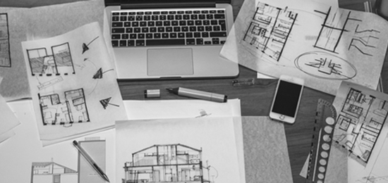
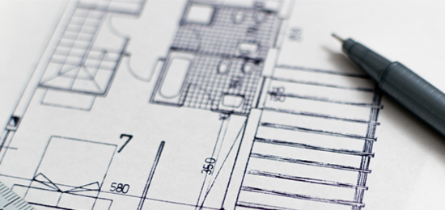
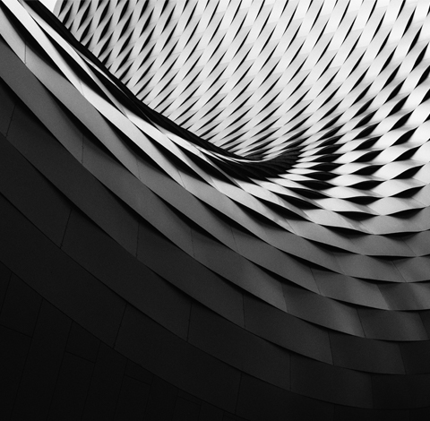

Angelozzi_Camillo_Project3_Architecture
Introduction Content
.Architecture
.Architecture is both the process and the product of planning, designing, and constructing buildings and other physical structures. Architectural works, in the material form of buildings, are often perceived as cultural symbols and as works of art. Historical civilisations are often identified with their surviving architectural achievements.
Article Part One
"Architecture" can mean:
. A general term to describe buildings and other physical structures.
. The art and science of designing buildings and (some) non-building structures.
. The style of design and method of construction of buildings and other physical structures.
. Knowledge of art, science, technology, and humanity. The practice of the architect, where architecture means offering or rendering professional services in connection with the design and construction of buildings, or built environments.
. The design activity of the architect, from the macro-level (urban design, landscape architecture) to the micro-level (construction details and furniture).
Architecture has to do with planning and designing form, space and ambience to reflect functional, technical, social, environmental, and aesthetic considerations. It requires the creative manipulation and coordination of materials and technology, and of light and shadow. Often, conflicting requirements must be resolved. The practice of architecture also encompasses the pragmatic aspects of realising buildings and structures, including scheduling, cost estimation and construction administration. Documentation produced by architects, typically drawings, plans and technical specifications, defines the structure and/or behaviour of a building or other kind of system that is to be or has been constructed.
Article Part Two
The earliest surviving written work on the subject of architecture is De architectura, by the Roman architect Vitruvius in the early 1st century AD. According to Vitruvius, a good building should satisfy the three principles of firmitas, utilitas, venustas, commonly known by the original translation – firmness, commodity and delight. An equivalent in modern English would be:
- Durability – a building should stand up robustly and remain in good condition.
- Utility – it should be suitable for the purposes for which it is used.
- Beauty – it should be aesthetically pleasing.
According to Vitruvius, the architect should strive to fulfill each of these three attributes as well as possible. Leon Battista Alberti, who elaborates on the ideas of Vitruvius in his treatise, De Re Aedificatoria, saw beauty primarily as a matter of proportion, although ornament also played a part. For Alberti, the rules of proportion were those that governed the idealised human figure, the Golden mean.
The most important aspect of beauty was, therefore, an inherent part of an object, rather than something applied superficially, and was based on universal, recognisable truths. The notion of style in the arts was not developed until the 16th century, with the writing of Vasari: by the 18th century, his Lives of the Most Excellent Painters, Sculptors, and Architects had been translated into Italian, French, Spanish, and English.
Article Part Three
In the early 19th century, Augustus Welby Northmore Pugin wrote Contrasts (1836) that, as the titled suggested, contrasted the modern, industrial world, which he disparaged, with an idealised image of neo-medieval world. Gothic architecture, Pugin believed, was the only "true Christian form of architecture."
The 19th-century English art critic, John Ruskin, in his Seven Lamps of Architecture, published 1849, was much narrower in his view of what constituted architecture. Architecture was the "art which so disposes and adorns the edifices raised by men ... that the sight of them" contributes "to his mental health, power, and pleasure".
For Ruskin, the aesthetic was of overriding significance. His work goes on to state that a building is not truly a work of architecture unless it is in some way "adorned". For Ruskin, a well-constructed, well-proportioned, functional building needed string courses or rustication, at the very least.
Article Part Four
On the difference between the ideals of architecture and mere construction, the renowned 20th-century architect Le Corbusier wrote: "You employ stone, wood, and concrete, and with these materials you build houses and palaces: that is construction. Ingenuity is at work. But suddenly you touch my heart, you do me good. I am happy and I say: This is beautiful. That is Architecture".
Le Corbusier's contemporary Ludwig Mies van der Rohe said "Architecture starts when you carefully put two bricks together. There it begins.